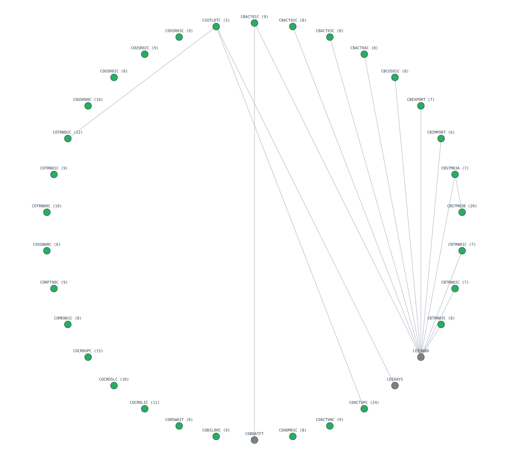

プロジェクト概要
対象コーパス carddemo の全 31 プログラムを解析し、移行困難度指数（MDI）でランキングした。深い成果物（注釈レポート＋AST/CFG/DFG 図）は上位 9 本（MDI 上位 8 ＋ バケット代表）を掲載する。
プログラム間依存グラフ

循環依存: なし / 動的CALL: なし / CALL エッジ数: 16
デモ対象プログラム
移行優先度ランキング（全 31 本）
| 順位 | プログラム | MDI | リスク | ファンイン | ファンアウト | 推奨戦略 |
|---|---|---|---|---|---|---|
| 1 | COACTUPC | 24.3 | Low | 0 | 1 | BigBang |
| 2 | CBSTM03B | 19.5 | Low | 1 | 0 | BigBang |
| 3 | COCRDUPC | 15.3 | Low | 0 | 0 | BigBang |
| 4 | COTRN02C | 12.4 | Low | 0 | 1 | BigBang |
| 5 | COCRDLIC | 11.2 | Low | 0 | 0 | BigBang |
| 6 | COUSR00C | 9.7 | Low | 0 | 0 | BigBang |
| 7 | COTRN00C | 9.7 | Low | 0 | 0 | BigBang |
| 8 | COCRDSLC | 9.6 | Low | 0 | 0 | BigBang |
| 9 | COACTVWC | 9.5 | Low | 0 | 0 | BigBang |
| 10 | COUSR02C | 9.4 | Low | 0 | 0 | BigBang |
| 11 | COUSR03C | 9.4 | Low | 0 | 0 | BigBang |
| 12 | COTRN01C | 9.3 | Low | 0 | 0 | BigBang |
| 13 | COBIL00C | 9.2 | Low | 0 | 0 | BigBang |
| 14 | CBACT01C | 8.8 | Low | 0 | 2 | BigBang |
| 15 | CORPT00C | 8.6 | Low | 0 | 0 | BigBang |
| 16 | CBACT03C | 8.4 | Low | 0 | 1 | BigBang |
| 17 | CBTRN03C | 8.3 | Low | 0 | 1 | BigBang |
| 18 | CBACT02C | 8.2 | Low | 0 | 1 | BigBang |
| 19 | CBCUS01C | 7.9 | Low | 0 | 1 | BigBang |
| 20 | CBACT04C | 7.7 | Low | 0 | 1 | BigBang |
| 21 | COADM01C | 7.7 | Low | 0 | 0 | BigBang |
| 22 | COUSR01C | 7.6 | Low | 0 | 0 | BigBang |
| 23 | COMEN01C | 7.5 | Low | 0 | 0 | BigBang |
| 24 | CBTRN02C | 7.3 | Low | 0 | 1 | BigBang |
| 25 | CBSTM03A | 7.2 | Low | 0 | 2 | BigBang |
| 26 | CBTRN01C | 7.1 | Low | 0 | 1 | BigBang |
| 27 | CBEXPORT | 7.0 | Low | 0 | 1 | BigBang |
| 28 | CBIMPORT | 6.0 | Low | 0 | 1 | BigBang |
| 29 | COSGN00C | 5.7 | Low | 0 | 0 | BigBang |
| 30 | CSUTLDTC | 4.9 | Low | 2 | 1 | Incremental |
| 31 | COBSWAIT | 0.5 | Low | 0 | 0 | BigBang |